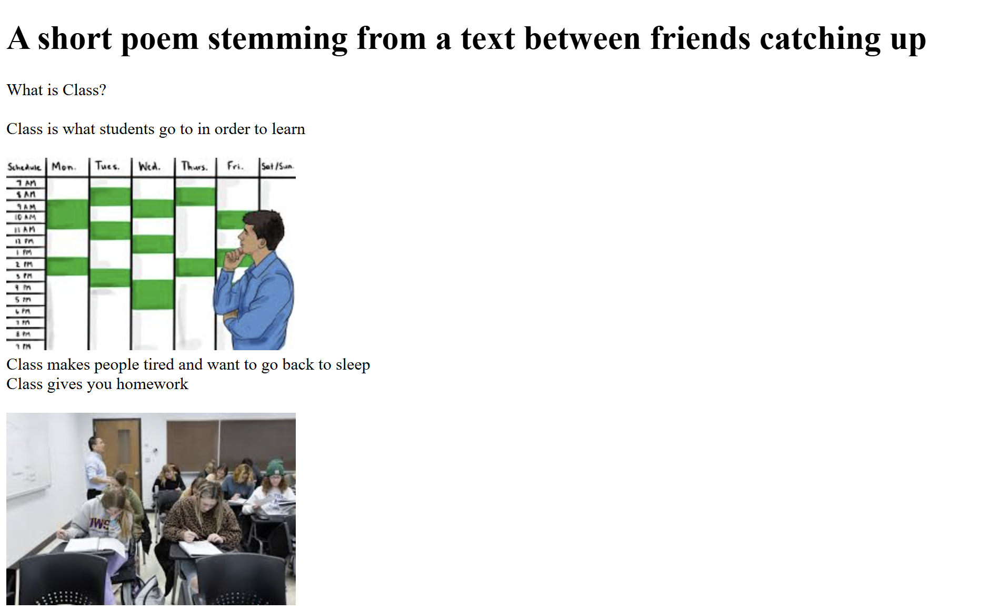
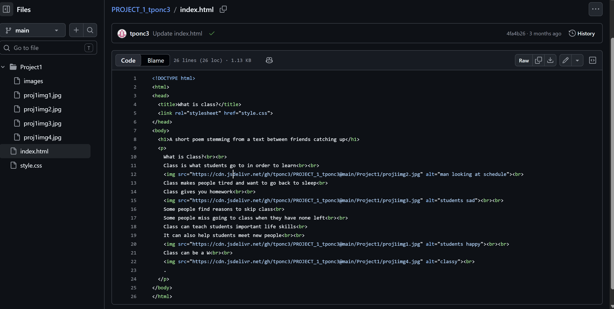
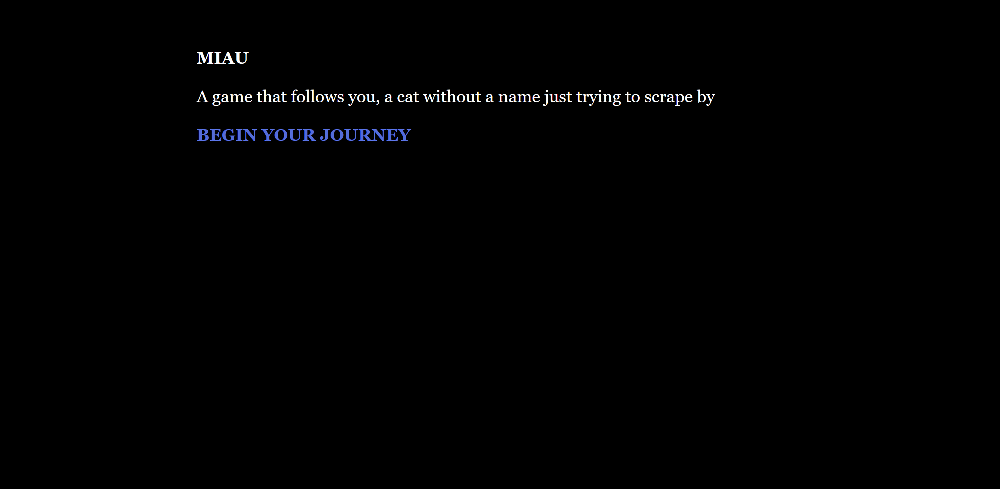
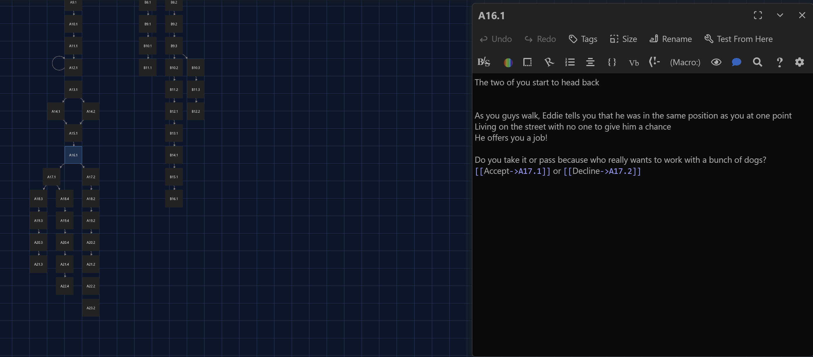

What is Class?
Class is what students go to in order to learn

Class makes people tired and want to go back to sleep
Class gives you homework

Some people find reasons to skip class
Some people miss going to class when they have none left
Class can teach students important life skills
It can also help students meet new people

Class can be a W

About This Poem
This flarf poem was created from a text between friends catching up. I used the idea of uncreative writing by taking found language and shaping it into a short poem about class, student life, and the mixed feelings people can have about school.